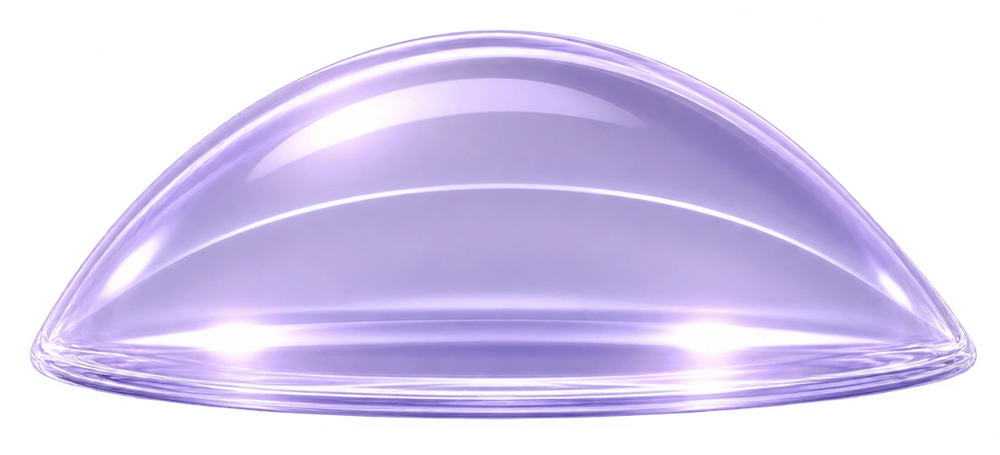
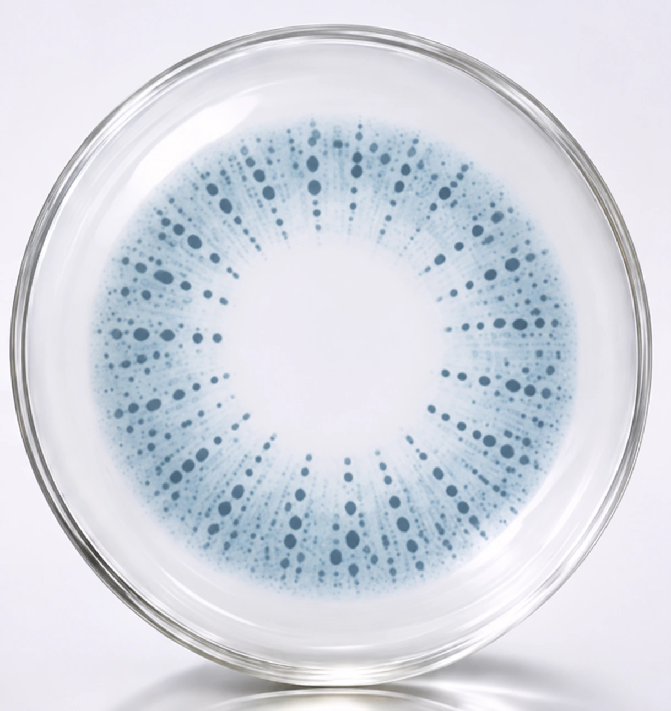
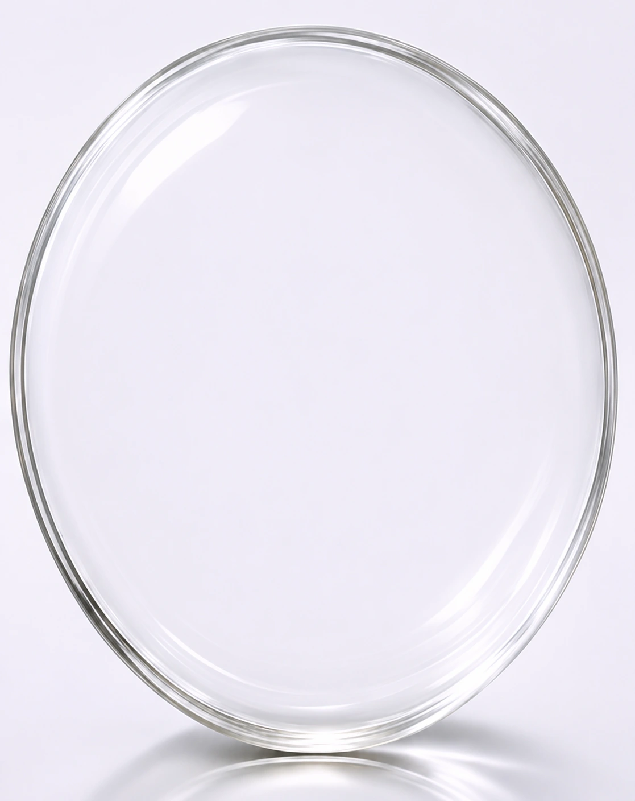
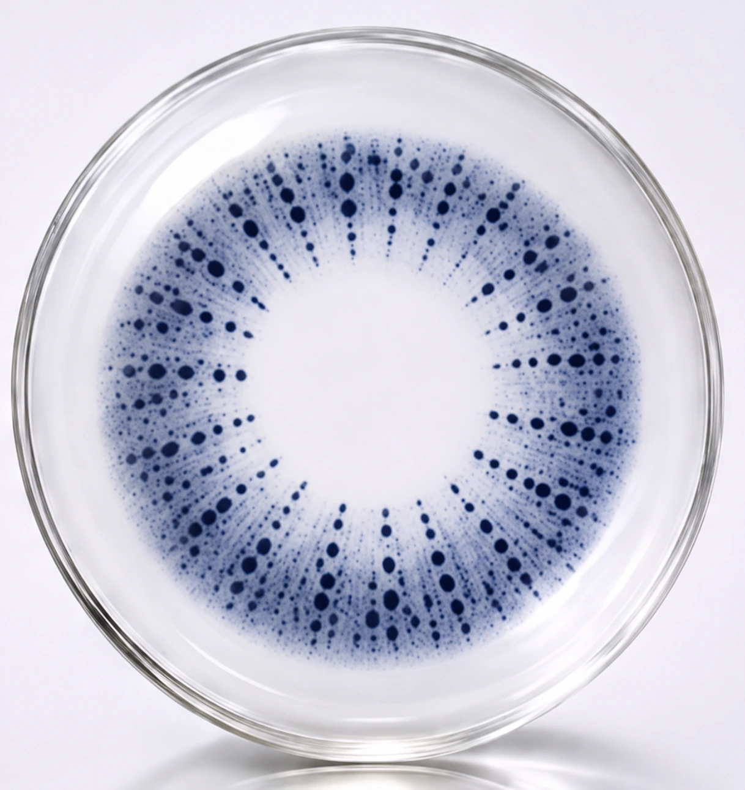
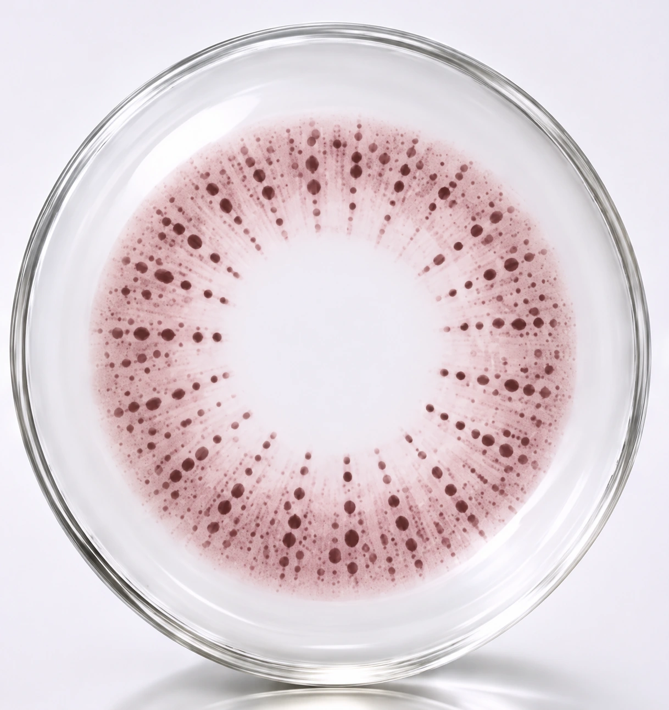

Individual by design
Personalized lens thinking begins with individual assessment, professional fitting and follow-up.
A personal perspective on eye care
A personalized mini-scleral lens concept exploring
comfort, clarity, and aesthetic expression.
Comfort, Clear, Beauty.
Concept in development
Product overview
VITINT brings specialized mini-scleral lens design into conversation with individual aesthetic expression.
Our concept starts with a clear lens foundation and professional fitting. From there, we explore how iris color and pattern could become personal choices—alongside the optical and material evaluation each design requires.
Understand the design
Personalized lens thinking begins with individual assessment, professional fitting and follow-up.
A mini-scleral foundation informs our exploration of fit and the fluid space beneath the lens.
Proposed iris colors and patterns introduce an aesthetic direction, with a transparent central optical area.
Lens technology
A mini-scleral lens is designed to arch over the cornea, with its edge supported by the tissue overlying the sclera. The space beneath can hold a fluid reservoir.
General lens-design principles. The illustration is schematic and not to scale; it does not specify a VITINT fit or clinical performance.
The lens arches over the corneal surface. Individual clearance must be assessed during professional fitting.
The space beneath a fitted scleral lens can hold fluid over the cornea. This is a general design principle, not a validated VITINT outcome.
The peripheral lens rests on tissue overlying the sclera. Alignment and follow-up require professional evaluation.
Color Studio
Begin with Clear, or explore a softer blue, a deeper blue and a warm rose-brown. Each direction pairs a transparent lens form with a different iris design.
Natural Foundation — a clear starting point for personalized lens design.
Concept color preview. Designs under development.




Clinical context
Clinical questions guide our exploration. Personal expression adds another dimension. Every proposed application begins with professional assessment.
Irregular corneal shape and vision rehabilitation provide context for specialized lens-design research. Individual suitability requires clinical evaluation.
We are exploring iris colors and patterns where visual needs and appearance-related concerns may intersect. These possibilities require further evaluation.
Dry-eye-related discomfort and difficult cosmetic lens experiences inform our research questions. VITINT is not a validated dry eye treatment, and suitability cannot be assumed.
Care scene shown as concept imagery. These are proposed research areas, not validated VITINT indications or patient outcomes.
Research & development
Our focus is on design exploration.
Material, optical and clinical validation remain essential steps ahead.
Foundational concept
Clear lens design, fitting research and validation form the starting point.
Proposed customization
Iris colors and patterns require further material, optical and clinical evaluation.
Future exploration
Clinician-supported fitting suggestions and digital previews, with no autonomous diagnosis or prescribing.
A development roadmap. No phase is presented as an approved or commercially available product.
Comfort. Clarity. Individuality.
A new perspective on professional eye care
and the possibilities of personal expression.